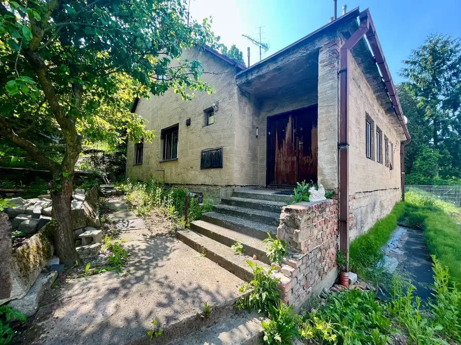
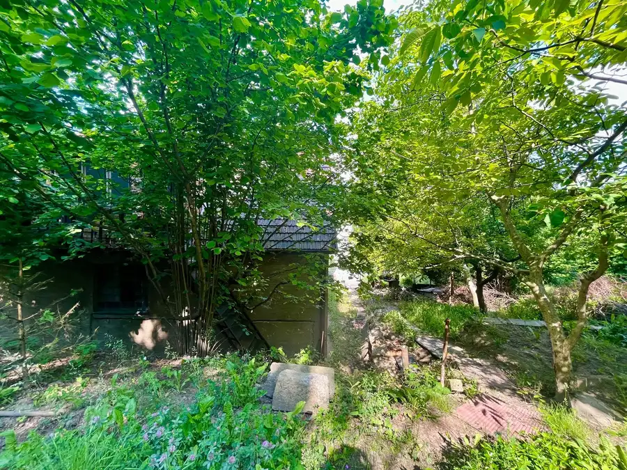
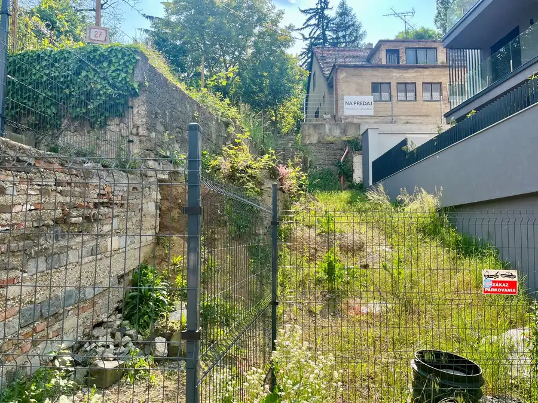
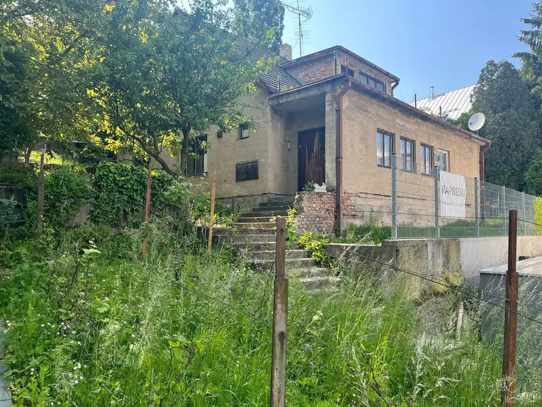
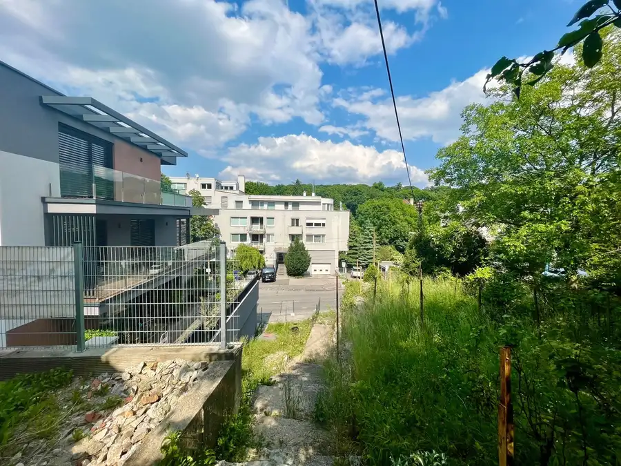
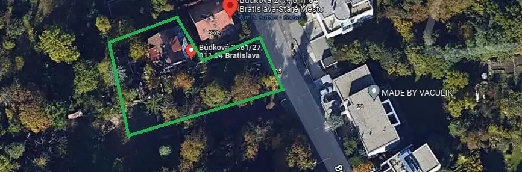

PREDAJ -Lukratívny pozemok so starším domom pri Horskom parku
Staré Mesto, Bratislava






- Dispozícia6-izbový
- Plocha220 m²
- Stavpôvodný
- Vlastníctvoosobné
O nehnuteľnosti
Realitná kancelária Nuera Vám exkluzívne ponúka výnimočnú príležitosť na kúpu prémiového pozemku v jednej z najžiadanejších a najlukratívnejších častí Bratislavy – priamo na Búdkovej ulici v Starom Meste. Nehnuteľnosti v tejto lokalite sa na trhu objavujú len zriedka, čo z tejto ponuky robí nielen ideálne miesto pre Váš nový domov, ale aj vynikajúcu investíciu.
Detaily pozemku a stavby
Veľkorysý pozemok s výmerou 767 m2 má praktický tvar písmena „L“, ktorý poskytuje výborné možnosti na architektonické rozvrhnutie stavby a záhrady tak, aby bolo zabezpečené maximálne súkromie.
Na pozemku aktuálne stojí starší 3-podlažný rodinný dom. Dom sa nachádza v pôvodnom stave, no je suchý a v zdravej kondícii. Novému majiteľovi tak otvára dve atraktívne možnosti:
Rekonštrukcia: Využitie existujúcej stavby a jej premena na moderné bývanie s dušou.
Novostavba: Využitie lukratívneho pozemku na realizáciu úplne novej, reprezentatívnej mestskej vily presne podľa Vašich predstáv.
Základné parametre v skratke:
Lokalita: Búdková ulica, Bratislava – Staré Mesto
Výmera pozemku: 767 m²
Tvar pozemku: Písmeno L
Existujúca stavba: 3-podlažný rodinný dom (pôvodný stav, suchý)
Inžinierske siete: Všetky siete sú dostupné priamo na pozemku a zapojené v dome (voda, elektrina, plyn, kanalizácia)
O lokalite: Búdková ulica a Horský park
Búdková ulica predstavuje absolútny vrchol bratislavského rezidenčného bývania. Nachádza sa v tesnom susedstve Horského parku, ktorý patrí k najkrajším zeleným oázam mesta. Táto prestížna štvrť je domovom mnohých diplomatických rezidencií a luxusných víl. Poskytuje dokonalé súkromie, pokoj a únik od mestského ruchu, a to všetko len pár minút jazdy od historického centra Bratislavy, Bratislavského hradu či Slavína. Lokalita ponúka ideálne spojenie bezprostredného kontaktu s prírodou a prémiového mestského životného štýlu.
Tento pozemok je pripravený pre klienta, ktorý netoleruje kompromisy a hľadá to najlepšie, čo bratislavský realitný trh ponúka.
Cena: 700.000EUR
Pre bližšie informácie, pôdorysy alebo dohodnutie osobnej obhliadky nás neváhajte kontaktovať. Radi Vám nehnuteľnosť osobne predstavíme.
Parametre
- Rozloha pozemku
- 767 m²
- Zastavaná plocha
- 132 m²
- Celková rozloha
- 767 m²
- Úžitková plocha
- 220 m²
- Počet poschodí
- 3
- Počet izieb
- 6
- Vlastníctvo
- osobné
- Stav
- pôvodný
- Status
- aktívne
- Odvoz odpadu
- áno
- Voda
- verejný vodovod
- El. napätie
- 230V
- Plyn
- áno
- Kanalizácia
- áno
- Internet
- lokálny poskytovateľ
- Kúpeľňa
- áno
- Vykurovanie
- vlastné - plyn
- Pivnica
- áno
- Garáž
- nie
- Parkovanie
- vonkajšie
- Inžinierske siete
- áno
- Postavené z
- Zmiešané
- Zariadenie
- čiastočne
- Zateplený objekt
- nie
- Strecha
- pôvodná
- Energetický certifikát
- nie
- Orientácia
- juhovýchodná
- Terén
- mierny svah
- Prístupová cesta
- asfaltová cesta
- Dátum zverejnenia
- 2023-06-06
Kde to je
Mohlo by Vás zaujímať
 BytNové
999 999 999 €GANZ HOUSE - Exkluzívny 3-izbový byt v srdci Eurovea City
Nivy, Bratislava
3-izbový80 m²5. podlažie
BytNové
999 999 999 €GANZ HOUSE - Exkluzívny 3-izbový byt v srdci Eurovea City
Nivy, Bratislava
3-izbový80 m²5. podlažie
 BytNové
750 000 €PANORAMA CITY - 3i byt s výhľadom na hrad, 26.p. 97m2, 2 kúpeľne
Staré Mesto, Bratislava
3-izbový93.8 m²26. podlažie
BytNové
750 000 €PANORAMA CITY - 3i byt s výhľadom na hrad, 26.p. 97m2, 2 kúpeľne
Staré Mesto, Bratislava
3-izbový93.8 m²26. podlažie
 BytNové
449 000 €MILLHAUS - 3,5i byt, šatník + 2x balkón, parking
Nivy, Bratislava
3,575 m²12. podlažie
BytNové
449 000 €MILLHAUS - 3,5i byt, šatník + 2x balkón, parking
Nivy, Bratislava
3,575 m²12. podlažie